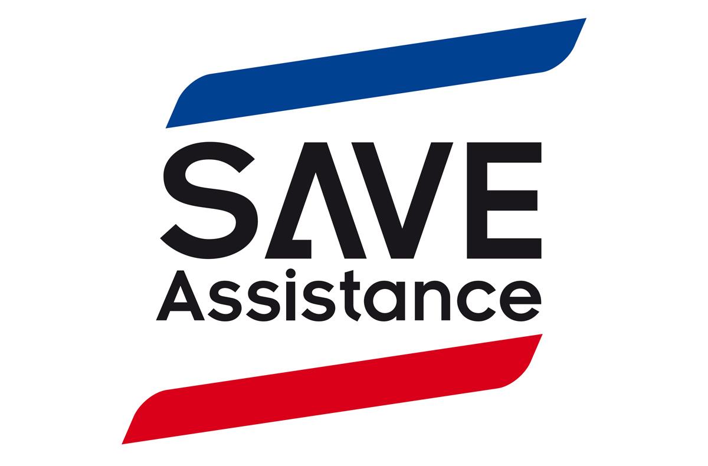
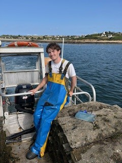

Career
Internships
-
2026
DevOps Internship
Strengthening the quality and reliability of product code by automating controls using SonarQube and GitHub Actions.

-
2025
Worker internship
Worker in oister and mussel farms.

Professional Project
Presentation of my career goals and professional project:
Field : Space or New Technologies
I'm aiming for ...